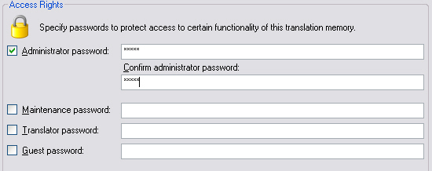
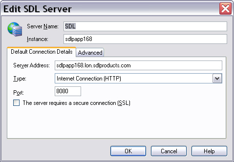

Accessing Translation Memories
TMs can be accessed in two ways: either by opening a TM file stored on a hard disk or by connecting to a TM Server over LAN or WAN.
File-based TMs
When accessing a file-based TM users open an *.sdltm file, which is based on SQLite database technology. By default, file-based TMs are not password-protected. However, users may assign passwords for a number of access levels. Users with guest access, for example, can only read a TM. Users with the administrator access can perform any operation on a TM, e.g. maintenance, export, import, etc.

Server-based TMs
Server TMs are physically stored in a database system such as Microsoft SQL Server. The TM Server middleware negotiates the access between the client application and the server-based TMs. The TM Server software can be installed on the same machine as the database system or on a separate server computer. Server-based TMs can be accessed in a LAN through TCP or through the Web using HTTP. A user who wants to access a TM Server requires the server address, the server instance name, the port, and user name with password.
